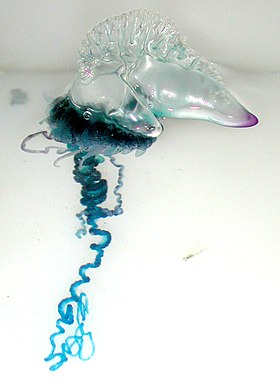
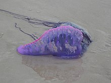
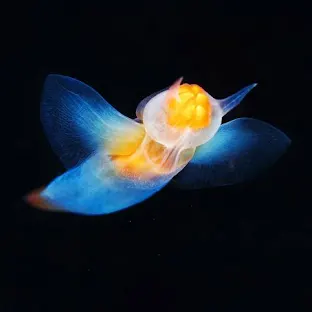
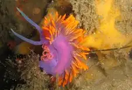
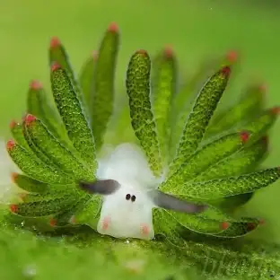

Glaucus atlanticus, popularmente conhecido como Dragão Azul, Anjo Azul ou Andorinha do Mar, é uma espécie de lesmas-do-mar pelágicas pertencente ao grupo dos moluscos nudibrânquios da família Glaucidae, sendo a única espécie conhecida do género Glaucus[1]. A espécie está estreitamente aparentada com Glaucilla marginata, outro membro da família Glaucidae.


A caravela-portuguesa (Physalia physalis) é o único organismo em colônia heteromorfa, no grupo dos cnidários.[1] Ou seja, são seres que vivem em colônia, isto é, estão conectados anatomicamente e não sendo um único ser. E são divididos em duas partes: região subnatural e região natural, as duas estando opostas.



